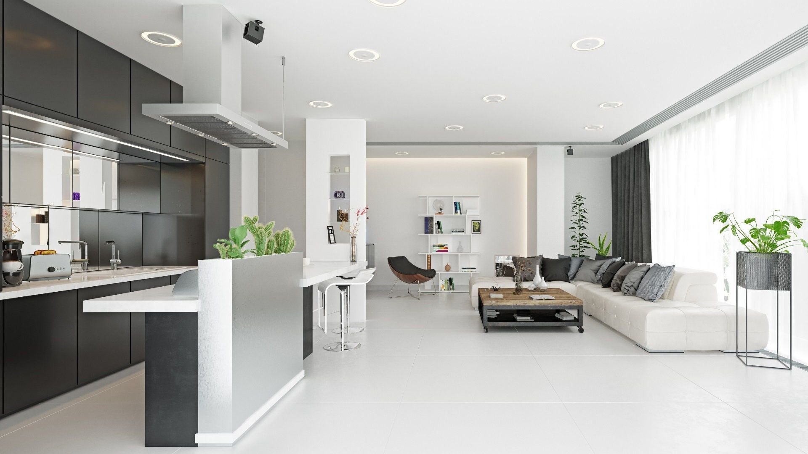

Conceito
Neste projeto, removemos uma parede para ampliar a cozinha e integrar o ambiente com a sala de estar e jantar.
No lugar da antiga divisória, criamos uma bancada generosa de um lado, onde os convidados podem se acomodar confortavelmente, enquanto, do outro, os moradores cozinham e aproveitam juntos o momento.
